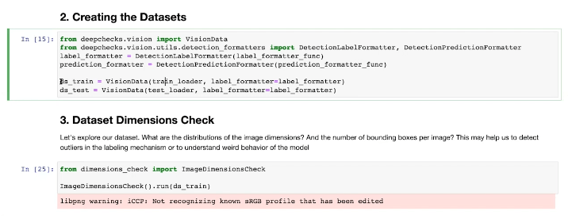
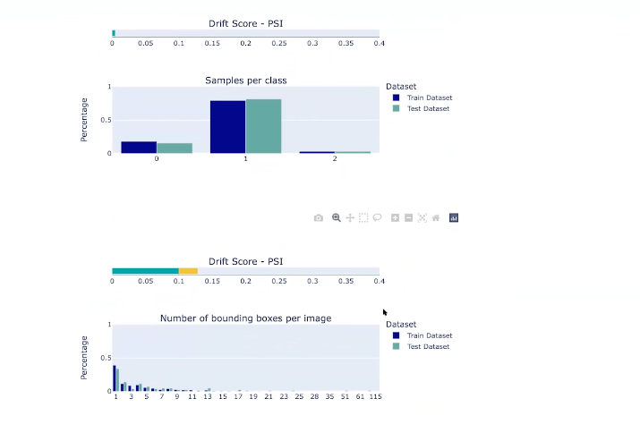
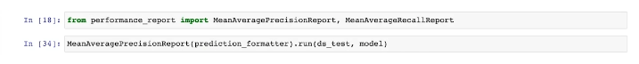
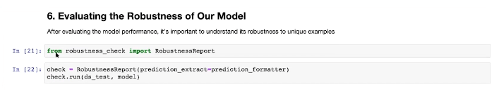
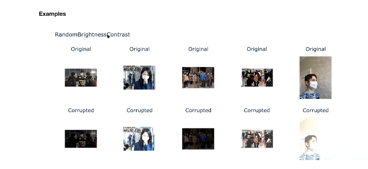

Deepchecks now and it’s future: deepchecks.vision Module
Deepchecks feedback events are organized to look at the current functionalities of a specific aspect of the Deepchecks library and discuss the future in that area with our community and get valuable feedback. As an open-source start-up, we rely on feedback and contributions from our community members both old and new hence the importance of these reviews.
 February 24, 2022
February 24, 2022 9:00 AM PST / 12:00 PM EST / 5:00 PM GMT
9:00 AM PST / 12:00 PM EST / 5:00 PM GMTDescription
Quick Recap: Deepchecks
Deepchecks is an open-source package that enables data science practitioners to efficiently validate machine learning models and the data used in creating them. The importance of this package arises from the inherently intertwined relationship between data and the model in a typical ML development process/framework. Deepchecks provides users with checks to validate the data or model at each stage of this process.
At its base, checks when used correctly provide outputs with information about the data or model. It can be about data leakage, model performance, or just information about the structure of the data depending on what a practitioner is looking to validate. Suites on the other hand are a collection of checks with a holistic diagnosis of the model or data of interest and the exciting thing is that conditions can be added to these checks for more flexibility. Check out our Quickstart in 5 minutes tutorial and lets know what you think.
Computer Vision Checks
For now, Deepchecks supports Pytorch object detection and classification use cases and with time based on feedback, will add more use cases.
In every step in the computer vision pipeline, there are checks to enable practitioners to avoid pitfalls and validate their data and model. Similar to the tabular package, the vision package has an object called the ‘VisionData’ that contains the data loader and metadata regarding the task type among other functions. To give you some insight into what this module offers, we have listed five important checks for you to see and use.
#1 Dataset Dimensions: Integrity check and check if the data is correct
To derive metadata from the dataset of choice, it has to be transformed into a format recognized by deepchecks. While in this preprocessing stage, our ImageDimensionsCheck package can check, for example, the distributions of the image dimensions and the number of bounding boxes per image. This invariably can help detect outliers in labeling or in other cases to understand strange behaviors in the model of choice.
#2 Label Drift: Checking if the data was split correctly
Sometimes, there is a high likelihood of having varying distributions of the target label after splitting data into train and test. This mistake can reduce the model performance on the test set, and we don’t want that to happen to data science teams. Deepchecks built the TrainTestLabelDrift package to enable data scientists and ML engineers to detect label drift between the distributions of the train and test datasets. It uses metrics like Drift Score – Earth Mover’s Distance, Bounding box area distribution, Drift Score – PSI, Sample per class, and bounding box per image.
#3 Performance: Performance of the model
After validating the dataset and training the model, the next natural step will be to evaluate and validate the model. It can be a difficult task because there are different evaluation metrics for each task type but for an object detection task, Deepchecks supports two metrics namely, MeanAveragePrecisionReport and MeanAverageRecallReport which provides an understanding of how well the object detection model performed.
#4 Robustness: Performance of model on unique examples
The RobustnessReport package enables teams to check the strength of their model on varying conditions (or corruptions) each data example is subjected to. It utilizes RandomBrightnessContrast, ShiftScaleRotate, HueSaturationValue, and RGBShift corruptions on images to test the model’s performance.
In other words, RobustnessReport creates augmented examples of the dataset to check the performance degradation of the model. This can give immense insight on the type of techniques to use to ensure that the data is sufficiently robust and in turn increase model performance.
#5 Suspicious Robustness:
We also know that a model can be too robust which might translate to overfitting on specific augmentations or features that might not be relevant to the problem. Deepchecks can check this using the SuspiciousRobustness package which is designed specifically to detect if the dataset is suspiciously robust. It shows the mean average precision depending on the level of corruption. It is also flexible as anyone can edit parameters of the object to reflect a realistic level of augmentation the model might encounter.
Challenges in generic CV validation stems from framework use, task types, conventions, and formats (formatters for label, prediction, and image). We are working hard to see that Deepchecks can accommodate all these with the help of our community.
Plans for the future
There are features we planned to implement in the initial version which helps check for:
- Leakage: When the train and test set to share the same or similar data due to poor splitting of the data in some cases or a suspiciously high accuracy score.
- Redundancy: Wasting resources on training similar datasets.
- Ambiguity (label): More than one label creates different interpretations of the image and can be problematic for the model. It happens primarily during tagging in a typical classification use case.
- Outliers: Inconsistent images in a dataset. It is not necessarily a bad thing but knowing that there are outliers helps the data scientist or ML engineers make informed decisions in the model building process.
Additional checks:
- Model inference time: Gives a report on time spent by the model to make a prediction. For example, in the case of deep learning, how long does it take to run a forward propagation?
- Samples of low confidence: It checks and displays images with low confidence.
In the next version, we want to implement checks for:
- Data drift:
This is caused by image data changing over time and can affect the model. We will address this issue by looking for drifts in simple properties, for example, looking at the distributions of color histograms of the trained dataset and comparing with test dataset to see if there is a significant drift. Also, we can look for drift in the bounding box centers in the train and test dataset.
In the future, we would like to use the embedding layer of the user’s or third-party neural network and use those features as the base of a domain classifier to learn the difference in the train and test dataset.
- Simple feature contribution:
We want to go beyond just knowing that the model succeeded but how it succeeded? We want to know the specific defining feature (not just a simple feature like color in the example below) that influenced the model’s decision.
- Quantized model performance:
For a quantized model, we would like to simply compare its performance before and after quantization.
We will be supporting TensorFlow framework soon and adding tasks such as, Segmentation, Regression, and Pose Estimation.
In conclusion, Deepchecks is community focused, and we will need all the support we can get to ensure the realization of our planned improvements. You can join our community and also become a contributor for this project on GitHub. Can’t wait to get feedback and make the evaluation, and validation process for practitioners easier.